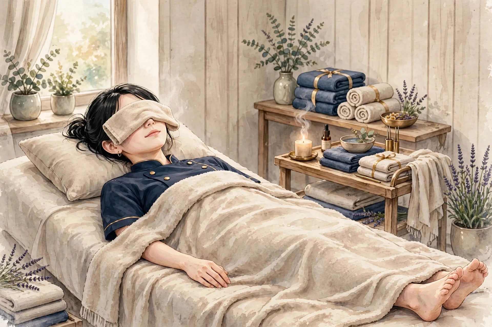

大宮で雨の日の通勤のあとに気になる心身の重だるさ｜自律神経の乱れ感との付き合い方

大宮の雨の日は、朝のホームからして様子が違います。傘をさした人の列が長く、電車は少し遅れ気味で、車内は湿った空気でいっぱいです。そんな雨の日の通勤のあと、夕方になって「体が重い」「気分がすっきりしない」「なんだかだるい」と感じることはありませんか。雨の日の通勤は、気圧や湿度の変化に加え、濡れた足元の冷えや電車の混雑など、体の負担になる条件が重なりやすいものです。今回は、大宮で雨の日の通勤のあとに気になりやすい心身の重だるさについて、自律神経の乱れ感という視点から、その背景を整理し、帰宅後に取り入れやすい過ごし方をご紹介します。
自律神経の乱れ感とは、どんな状態か
通勤のあとに感じる重だるさを考えるとき、よく出てくる言葉に「自律神経」があります。自律神経は、体温の調整や心拍、呼吸、消化など、意識しなくても働く体の仕組みを担っているとされています。体を活動モードにする交感神経と、休むモードにする副交感神経があり、この二つの切り替えがうまくいっていると、朝はすっきり目覚め、夜は自然に眠気が訪れると考えられています。雨の日の通勤は、この切り替えを乱しやすい条件が重なります。朝から電車の遅延を気にし、傘や荷物に気を配り、濡れたホームで足元に注意を向ける。体は一日中、活動モードのまま過ごすことになります。帰宅してようやく力を抜いたときに、どっと重だるさが押し寄せてくるのは、そんな一日の過ごし方が背景にあるのかもしれません。「自律神経の乱れ感」という言葉は、こうしたバランスの崩れを感じるときの表現として使われています。病気の診断名ではなく、体の感覚を表す言葉として捉えるのがよいでしょう。
雨の日の通勤のあとに重だるさを感じやすい理由
まず考えられるのは、気圧と湿度の変化です。雨が近づくと気圧が下がり、体の中の水分の動きや血流の感じ方が変わることがあると言われています。湿度が高い日は汗が蒸発しにくく、体がべたついたり、重く感じられたりすることもあります。二つ目は、濡れた足元の冷えです。大宮駅のホームから改札へ、傘をさして歩く間も、足元は濡れやすくなります。靴の中が湿ると、足元から体全体が冷えやすくなります。三つ目は、傘と荷物による片側への負担です。片手で傘を持ち、反対の肩にバッグをかけると、体のバランスが偏り、肩や背中の片側に負担が集中しやすくなります。四つ目は、電車の混雑と遅延による緊張です。雨の日は電車が遅れやすく、車内も混み合います。立つ場所を探したり、乗り換えの時間を気にしたりするうちに、体に力が入ったままの状態が続きます。五つ目は、朝の光の少なさです。曇りや雨の日は、朝の光を浴びる機会が減り、一日のリズムを整える手がかりが少なくなります。これらの要因は一つだけで重だるさを決めるものではなく、いくつかが重なって感じられ方が変わるものと考えられています。
通勤のあとに取り入れられるセルフケア
帰宅後のセルフケアは、温めること、ほぐすこと、力を抜くことの三つが中心です。無理のない範囲で、続けてみてください。
湯船で温まる
雨の日の通勤で冷えた体は、帰宅後の入浴でゆっくり温めてあげてください。ぬるめのお湯に肩まで浸かり、足元までしっかり温まる時間を作ってみてください。湯船の中で、両肩を耳に近づけるようにすくめて、ストンと力を抜く動きを数回繰り返すのも、湯船での過ごし方の一つです。湯上がりは湯冷めをしやすいので、温かいうちに着替えて、首元や足元を冷やさないようにしましょう。
肩や首をほぐす動き
傘を持った腕や、バッグをかけた肩は、片側に負担が偏りやすくなります。両手を肩にのせ、肘で大きな円を描くように肩を回す動きを、ゆっくり数回繰り返してみてください。首をゆっくり左右に傾ける動きも、首まわりのこわばりをほどく助けになります。どの動きも、痛みのない範囲で、気持ちよいと感じる強さに留めてください。大宮で気になる肩こりのページでは、肩の張りについてさらに詳しくまとめています。
呼吸で、気持ちを落ち着ける
通勤の緊張が残っていると感じたときは、ゆっくりとした呼吸を意識してみてください。肩の力を抜き、鼻から吸って、口からゆっくり吐く。数回繰り返すだけでも、体がすっと楽になる感覚を覚えることがあります。温かい飲み物とともに、静かな時間を過ごすのも、通勤のあとの過ごし方の一つです。
足元をいたわる
濡れた靴の中にいた足は、帰宅したらまず自由にしてあげてください。靴下を履き替え、足裏を両手の親指でゆっくり押すようにほぐします。足首をゆっくり回す動きも、足首まわりのこわばりをほどく助けになります。大宮で気になる脚のむくみのページでは、脚の重だるさについてさらに詳しくまとめています。
雨の日の通勤に合わせた小さな工夫
雨の日の通勤の負担を減らすには、朝の準備と、帰宅後の切り替えを見直すことが役立ちます。まず、靴の選び方です。雨の日は防水の靴を選び、靴下の替えを持ち歩くと、濡れた足元の冷えを受けにくくなります。職場に置き靴を用意できる方は、通勤用の靴と履き替えると、足元の湿りを気にせずに過ごせます。次に、傘と荷物の持ち方です。傘を持つ手を途中で持ち替えたり、荷物をリュックにまとめたりすると、片側への負担の偏りを和らげやすくなります。折りたたみ傘をバッグに入れておくと、帰りの雨に備えて安心です。次に、帰宅後の切り替えです。家に着いたら、まず濡れたコートや靴を脱ぎ、ゆったりした服装に着替えましょう。濡れたままの服装で過ごすと、体が冷えやすくなります。着替えたら、温かい飲み物を用意して、ほっとする時間を作ってみてください。また、翌朝の準備も見直してみてください。雨が続く予報の日は、前夜のうちに傘や替えの靴下、タオルを玄関にまとめておくと、朝の慌ただしさが減り、通勤の緊張を受けにくくなります。
受診の目安
雨の日の通勤のあとの重だるさが長く続く場合や、日常生活に支障が出るほどつらい場合は、無理をせず医療機関へ相談することも大切です。たとえば、疲れが2週間以上抜けない、動悸や息苦しさ、胸の痛みを伴う、体重が急に変わった、食欲が落ちた、気分の落ち込みが続くといった場合は、早めに受診を検討してみてください。雨の日の体の変化は一般的なものと考えられていますが、背景に別の体調の変化が隠れていることもあります。体の声に耳を傾け、「いつもと違う」と感じたら、一人で抱え込まず、医療機関や身近な人に声をかけてみてください。なお、薬を服用中の方は、体調の変化についてかかりつけの医師や薬剤師へ相談してみてください。大宮で気になる全身の疲労感や大宮で気になる寝つき・眠りの浅さのページでも、受診を考える目安をまとめています。
美容整体ステラ・ベテルギウスのご案内
雨の日の通勤のあとに心身の重だるさが気になるときは、体の声に耳を傾けるきっかけとして捉えてみてください。湯船で温まること、肩や首をほぐすこと、ゆっくりとした呼吸。この三つを帰宅後の過ごし方に組み込むことで、雨の日の通勤の重だるさをため込みにくくなります。美容整体ステラ・ベテルギウスは、さいたま市・大宮エリアで開院準備中の女性専用サロンです。オイルマッサージと美容整体で、雨の日の通勤のあとに重だるさを感じた日の体のケアをお手伝いできるよう、準備を進めています。料金は90分10,000円の単一価格で、初回割引はありません。営業時間は月〜土17:00〜22:00・日曜休みを予定しています。近日開院予定で、受付は開始次第、このサイトとLINE公式でお知らせします。お問い合わせ用LINE公式アカウントを開設しました。開院まで、このコラムで季節のセルフケアをお届けしていきます。